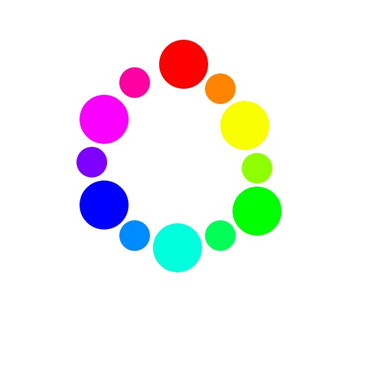
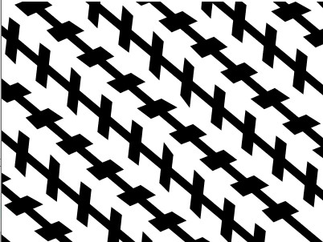
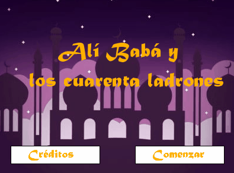
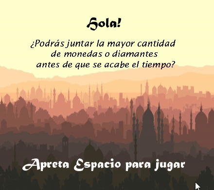

Mis trabajos con Processing
Introducción
Hola! ¿Cómo andas? En esta página voy a contar un poco de lo que fue mi 2021 en la materia Tecnología Multimedia 1. Es un materia que no se me da muy bien, por lo que requirió mucho esfuerzo y ganas de mi parte para llegar hasta acá. Paso a contártelo:
Círculo cromático
Para el primer trabajo práctico nos pidieron hacer un círculo crómatico con Processing. Y, a pesar de que me quedó bastante chueco, logré cumplir con la consigna pedida a la primera.
Link a tp1Créditos

Para el segundo trabajo práctico teníamos que hacer los créditos de un cuento, en mi caso elegí "Ali Babá y los cuarenta ladrones". Desgraciadamente, no fue fácil para mí entender del todo cómo tenía que ser el trabajo. Lo desaprobé dos veces (sí, DOS), por lo que tuve que ir a la cursada de invierno. Ahí es donde me guiaron los profes David y Tobías, y aprobé.
Link a tp2Ilusión óptica
La verdad es que aprender sobre el ciclo for me gustó bastante, pero replicar tal cual mi ilusión no fue simple. Estaba usando quads dispuestos en distintas direcciones, y fue difícil calcular las coordenadas. Otra que tuve que recuperar (todo por esos malditos quads), pero que al final aprobé.
Link a tp3Aventura gráfica
Pensé que este trabajo iba a ser difícil porque eran muchas pantallas por hacer con interacciones complejas entre ellas. Pero supongo que gracias a los arreglos (y a mi esfuerzo) el proceso se simplificó mucho. Aprobé a la primera!
Link a tp4Videojuego
Este trabajo lo aprobé hace poco, en el recuperatorio del recuperatorio (como me pasó con el tp2). Noviembre es un mes conocido por la cantidad de entregas y parciales finales que hay y, al ser esta la materia que más me cuesta, llegué hasta la última instancia, pero por un error mínimo que pude solucionar, así que también aprobé.
Link a tp5TP Final

Ups! Jajaja. Este trabajo no lo pude hacer por lo que mencioné antes, estaba muy ocupada intentando salvar mi tp5. Así que lo voy a encarar con todo en febrero. Dale que se aprueba!